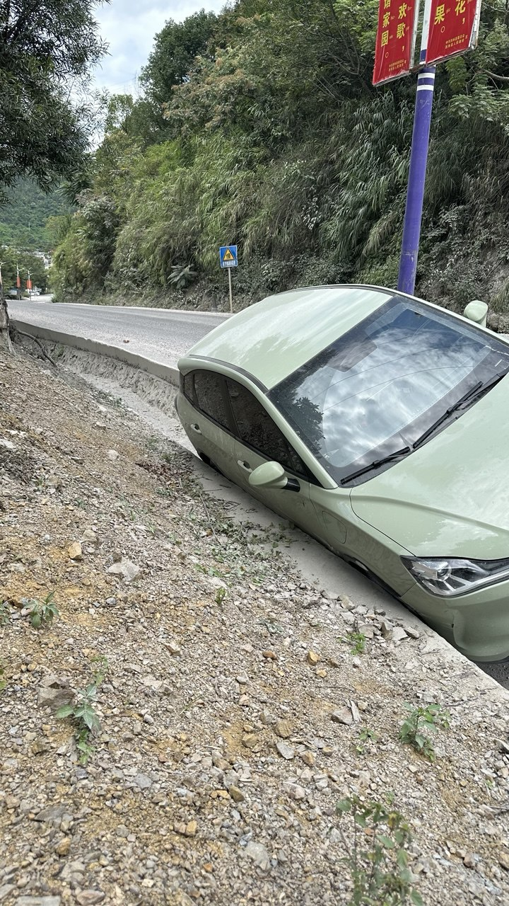

Les Accidents de Voiture dans Ma Vie | Original, traduit par l'IA
Il y a eu quelques accidents de voiture dans ma vie. Le plus grave s’est produit en avril 2018, juste un mois après l’obtention de mon permis de conduire. Je me rendais à Xilinhot, en Mongolie Intérieure. Je conduisais à environ 100 km/h avec ma femme. Après avoir quitté l’autoroute à un péage, qui n’avait pas de virage et était droit, j’ai cru que j’étais toujours sur l’autoroute. Je n’ai donc pas ralenti du tout. Soudain, il y a eu un carrefour.
Ma voiture a percuté une voiture blanche qui venait juste de tourner. Ma voiture a été projetée sur environ 10 mètres. Les choses sont devenues chaotiques. L’autre voiture a été poussée contre le séparateur routier. Je n’ai rien eu car j’avais ma ceinture de sécurité et je n’ai subi aucune blessure. Cependant, ma femme a eu des problèmes à l’épaule.
Je pouvais voir que l’autre voiture avait été gravement touchée. Je suis allé vérifier la situation. J’avais peur d’avoir gravement blessé quelqu’un. En vérifiant, j’ai trouvé un conducteur masculin seul dans la voiture, avec la tête qui saignait. J’ai appelé les services médicaux d’urgence et la police.
En réalité, nous avons eu de la chance. Avant de percuter sa voiture, il y avait un gros camion devant nous. Nous étions contents que ce gros camion roule vite et ait évité notre voiture. Sinon, notre voiture aurait pu passer sous le camion, ce qui aurait été très dangereux pour nous.
Plus tard, l’assurance de ma voiture m’a aidé. J’avais acheté la voiture d’occasion deux semaines avant l’accident, donc l’assurance était encore au nom de l’ancien propriétaire de ma voiture.
La police a découvert que le conducteur de la voiture blanche avait consommé une quantité importante d’alcool. Par conséquent, le lendemain, la police a décidé de nous tenir tous les deux également responsables, répartissant la faute à parts égales.
Cet accident m’a laissé un souvenir à vie. Les accidents que j’ai eus par la suite ont été anodins. Je suis heureux que les accidents de voiture dans ma vie ne m’aient pas tué. Je consigne cela ici pour souhaiter moins d’accidents de voiture dans le reste de ma vie, et je vous le souhaite aussi.

Source : Photo personnelle

Source : Photo personnelle

Source : Photo personnelle

Source : Photo personnelle

Source : Photo personnelle